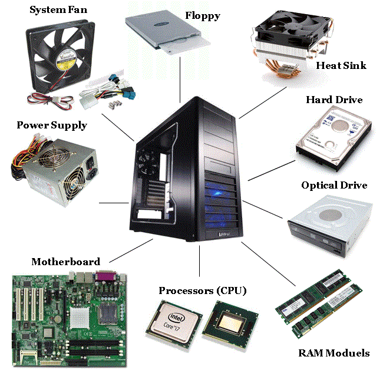

Componenta hardware – reprezintă totalitatea componentelor fizice
Componenta software –reprezintă totalitatea programelor şi instrucţiunilor
Partea software include:
Software-ul de sistem sau sistemul de operare face legătură între partea hardware şi restul aplicaţiilor şi administrează resursele calculatorului
Aplcaţii software –sunt programe care ajută utilizatorul să rezolve probleme din diverse domenii
Componentele unui calculator 
TABEL
Procesor
Memorie internă:RAM şi ROM
Placa de bază
Placa video
Placa de sunet
Placa de reţea
Hard disk/SSD
Sursă (generator)
Procesorul
Se mai numeşte şi Unitatea Centrală de Prelucrare (UCP).
-realizează calcule aritmetice şi operaţii logice
-controlează celelalte componente ale calculatorului
Procesorul are propria sa memorie numită memorie cache.
Viteza unui procesor reprezintă numărul de instrucţiuni care pot fi executate într-o unitate de timp. Se măsoară in MegaHertzi sau GigaHertzi.
Memoria RAM şi ROM
Memoria RAM (random acces memory) este o memorie volatilă. În ea se încarcă sistemul de operare şi programele folosite in timpul unei sesiuni de lucru. Această memorie poate fi scrisă cât şi citită.
Memoria ROM (read only memory) conţine informaţii necesare funcţionării calculatorului. Este o memorie nevolatilă.
Placa de bază
Placa de bază este placa principală a unui calculator, pe care se află circuite, conectori pentru plăci adiţionale, procesorul, BIOS-ul (Basic Input/Output System), memoria, interfaţa cu dispozitivele de stocare de date, porturile (paralel, serial), slot-urile pentru plăcile de extensie, controlerele pentru periferice (monitor, tastatură, unitatea de disc). Toate aceste cipuri de pe placa de bază poartă numele colectiv de cipset.
Placa video
Caracteristicile plăcii video:
calitatea afişării, dată de rezoluţie şi rata de reîmprospatare (refresh) a imaginii. Rezoluţia determină fineţea detaliilor şi numărul de culori şi nuanţe care pot fi afişate. Rata de reîmprospatare este importantă pentru sănătatea ochilor utilizatorului. Se consideră că minimul acceptabil este de 70Hz, optimul fiind la o valoare mai mare sau egală cu 85Hz.
calitatea generării imaginii (viteza de prelucrare a informaţiei grafice bi sau tridimensionale şi calitatea detaliilor).
Placa de sunet
Placa de sunet este componenta răspunzătoare de toate sunetele pe care le scoate calculatorul (avertizări, muzică, recunoaştere vocală). Ea poate îndeplini şi roluri precum: amplificator audio (de putere mică) sau corector de sunet prin elemente de filtrare. Pe placa de sunet se află conectori pentru una sau mai multe intrări şi ieşiri audio şi diferite prize de conectare cu alte echipamente.
Placa de reţea
Scopul plăcii de reţea este de a realiza conexiunea dintre un calculator şi o reţea locală la care acesta este conectat.